扉页
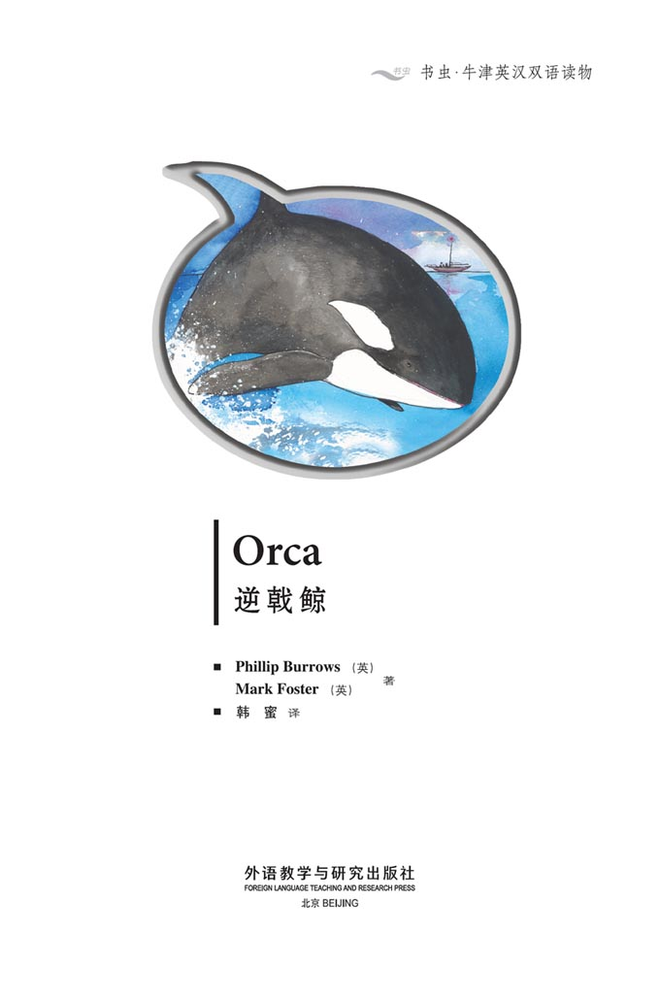
Copyright
Copyright © Foreign Language Teaching and Research Press 2006
All rights reserved. No part of this publication may be reproduced or distributed by any means, or stored in a database or retrieval system, without the prior written permission of Foreign Language Teaching and Research Press.
本书版权由外语教学与研究出版社独家所有。如未获得该社书面同意，书中任何部分之文字及图片，不得用任何方式抄袭、节录、翻印或存储利用于任何数据库及检索系统等。
Published by Foreign Language Teaching and Research Press
No. 19 Xisanhuan Beilu
Beijing, China 100089
http://www.fltrp.com
版权页
京权图字01-2006-2798
Originally published by Oxford University Press, Great Clarendon Street, Oxford. © 2004 This edition is licensed for sale in the People's Republic of China only and not for export therefrom.
'Oxford' is a registered trademark of Oxford University Press.
图书在版编目（CIP）数据
逆戟鲸／（英）伯罗斯（Burrows, P.），（英）福斯特（Foster, M.）著．—北京：外语教学与研究出版社，2006.5（2013.12重印）
（书虫·牛津英汉双语读物）
书名原文：Orca
ISBN 978-7-5600-5532-9
Ⅰ．逆… Ⅱ．①伯…②福… Ⅲ．①英语—语言读物②短篇小说—英国—现代 Ⅳ．H319.4：I
中国版本图书馆CIP数据核字（2006）第037881号
出版人：蔡剑峰
责任编辑：周 晶
封面设计：孙莉明
出版发行：外语教学与研究出版社
社 址：北京市西三环北路19号（100089）
网 址：http://www.fltrp.com
书 号：ISBN978-7-5600-5532-9
* * *
制售盗版必究 举报查实奖励
版权保护举报电话：（010）88817519
目录
Orca
Orca
Jack Griggs stands on his boat. The wind is strong and his boat moves quickly over the sea. A big, white bird goes past and makes a noise. 'Keyaaaa', it cries.
Jack smiles and says: 'Hello, bird. How are you, today?'
Jack's friends laugh and give some fish to the bird.
'Ah,' says Jack. 'Hungry, I see.' Jack's friends are Max and Sasha, and his wife's name is Tonya.
'I am hungry, too,' says Jack. 'Sandwiches and drinks, everybody? Tonya. Can you steer?'
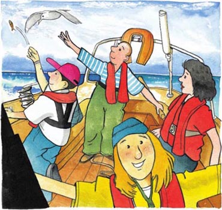
Half an hour later they are eating. 'What are we going to do now?' asks Jack.
'Oh, I am going to read my book. Then I'm going to sleep,' says Tonya.
'No – what about tomorrow?... Next month?... Next year?' Jack looks at everyone. 'We have lots of money from our old business, but...'
'We can start another business,' says Max.
'A sailing business?' says Sasha.
'I don't want to work any more,' says Tonya. 'We don't need to work.'
'OK, listen to me,' says Jack. 'I am thinking about sailing around the world.'
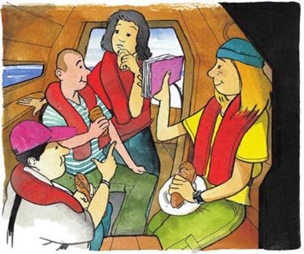
Max, Tonya and Sasha look at Jack. 'What? From here to Australia?' asks Tonya.
'Of course,' says Jack. He is getting very excited now. 'Max, what do you think?'
'I think we must talk about it,' says Max.
They talk for hours. It is night when Max, Sasha and Tonya say excitedly: 'OK. Let's do it!'
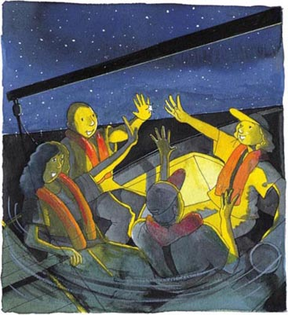
They have to do a lot before they leave. Jack talks to a man who knows about sailing around the world. He tells Jack that it is hard work.
'Does the sea frighten you? Your boat is very small. Do you know your friends well? Are they good at sailing?' he asks.
'We know each other well. They are the best people in the world,' says Jack.
The four friends look at lots of maps. Sasha wants to see a whale. Max wants to see Africa. 'I want to sit in the sun and catch fish to eat,' laughs Tonya.
It is exciting for all of them. And at first everything is easy.
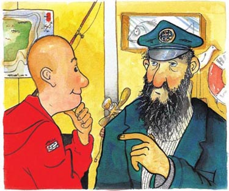
The big day arrives – they are leaving. Some of their friends and family come to watch. Their friends stand by the water and say goodbye.
'Good luck,' one of them says.
'Don't forget us!' says Sasha's sister.
'Write to me every day,' says Tonya's friend. 'Give the letters to a bird.'
Sasha begins to cry. 'What are we doing? Do I really want to go?' she thinks. Max takes her hand. All of them are quiet, excited, and a little unhappy.
'Bye,' says Jack quietly.
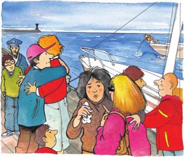
The wind is strong and the boat moves faster and faster. Jack, Max, Sasha and Tonya are happy at sea. There is a lot to do on the boat. The wind is behind them and soon they cannot see England. They are not unhappy now.
They are sailing south. In France they stop at L'Orient and Biarritz. In Spain, they visit La Coruna, and in Portugal they stop in Lisbon. The sun gets hotter and they feel good.
Sasha catches a big fish and they eat it for tea.
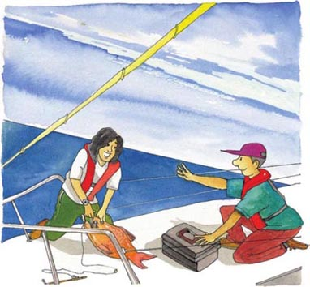
Soon, they are sailing past Africa. Here, everything is different. They stop in Gambia and people look at them. Small children bring beads and shells and cloth. Tonya buys a green hat. There is a lot of colour and noise and excitement.
They sail for weeks and weeks past Africa. They stop at many small towns and villages by the sea.'Africa is so interesting, so big,' says Sasha. 'It goes on and on. I look at it on the map, but...'
'This is why we are here,' says Jack. 'Talking to different people, seeing different things. The boat, the sea, the wind. Nothing is better than this, is it?'
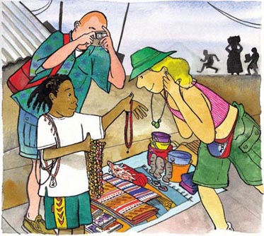
Some days later they see a big fishing boat. It is moving very fast.
'Hello!' they shout at the boat. The men on the boat look at them angrily. Max looks carefully at the boat through his binoculars.
'There is something wrong with their fishing net,' he says. Max moves the binoculars and sees something in the sea. 'I can see some net over there.' He points to their left. 'Why are they leaving it? Let's have a look.'
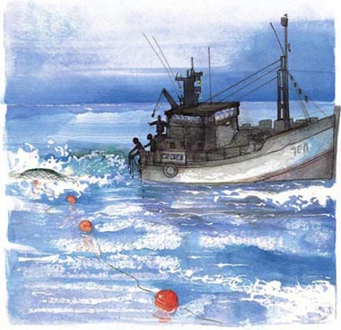
They get nearer to the net and Tonya takes the binoculars.
'What in the world...' says Tonya. 'What's that? There is something in the net. It's alive, but what is it?'

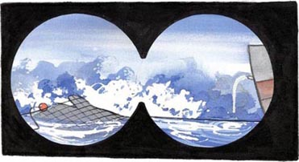
Very slowly they move nearer to the net. The thing in the net is big and it is making a lot of noise.
'I can see it now,' says Tonya. 'It's an orca – a killer whale – and it's hurt. There is blood in the water. What can we do? How can we help it?'
'I can see it too. It is a baby but we must be careful,' says Max.
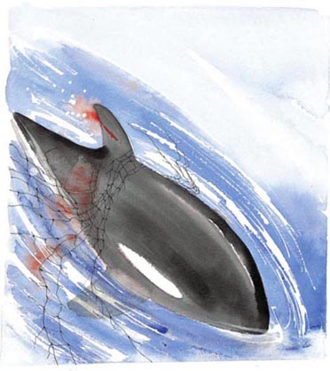
Jack is in the water. He is carrying a long paddle. 'I am going to help it. I can get the net off its fin,' he says.
'Where's its mother?' asks Sasha. She looks at the sea. 'I can't see any other whales, but they are near here, I think. Be careful, Jack.'
Jack gets the net off the baby killer whale. There is a big cut on its fin, but it swims away. Suddenly there are other killer whales near the boat.
'Jack!' Tonya shouts. 'Get in quickly.' Jack swims to the boat as fast as a fish. 'That baby killer whale... I am going to call it Lucky,' he says.
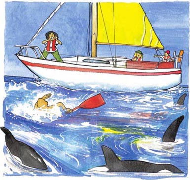
It begins to rain as they move away from the killer whales. Suddenly it is raining very hard and there is a lot of wind. The sky is black.
Jack says: 'This is bad. We must get away from the wind. I can see a town over there. Let's go.'
'I'm frightened,' says Tonya. It is difficult to hear her because of the wind.
'We're all frightened,' says Jack. 'But everything is OK.'
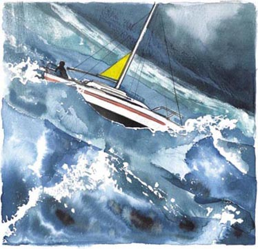
The town gets nearer but the waves get bigger and bigger. Suddenly a very big wave hits the boat. There is water everywhere.
'Is everyone OK,' shouts Jack. 'Max?'
'Yes,' says Max.
'Sasha?'
'My arm hurts but I'm OK,' says Sasha.
'Tonya?... Tonya?... Where's Tonya?' shouts Jack.
'She's not in the boat,' says Sasha. 'She's in the water. But where?'
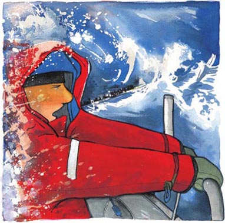
They look in the cold, dark water for hours. 'Tonya! Say something, Tonya. Where are you?' shouts Max.
The wind gets stronger and the boat is full of water. Another big wave hits the boat. Sasha's arm hurts a lot now.
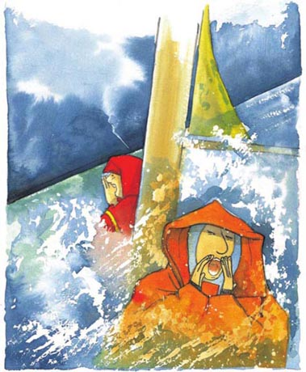
'Jack, we must stop. Do you want us all to die?' says Max. He puts his arm around Jack. 'We can't do any more. Tonya is wearing a lifejacket and she can swim very well. Let's sail to the town.'
Jack puts his head in his hands. 'This can't happen. It can't!' he says.
Max begins to steer the boat. But the wind is too strong. Some time later the boat hits a beach. The three friends get out. They are very tired.
They stop there. Max and Sasha sleep on the beach, but Jack sits near the water. He looks at the sea, thinking about Tonya.
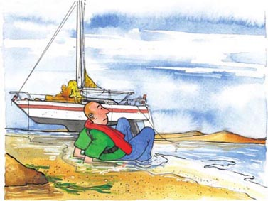
Tonya is five hundred metres away out in the sea. She begins to swim, but the waves are too big and the water is too cold. She finds some wood and puts her arms around it.
Tonya is thinking: 'I must be strong. I am not going to die. I want to see the sun again. Jack is going to find me.'
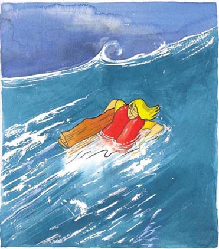
Tonya sees a boat far away. She calls to it. 'Help! Help me! I'm over here!' She moves her arms and shouts, but nobody hears her. The wind moves her away from the boat.
'Oh, Jack. I'm sorry,' she says. Her head goes down on to the wood. In the arms of the sea, she sleeps.
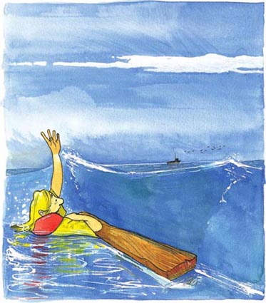
Suddenly Tonya is not sleeping. There is no wind and she can see the sun. She looks everywhere. There is a beach in front of her – but she cannot swim to it.
'I am too cold and too tired,' she thinks. 'I must see a boat soon.'
She looks at the sea. There are no boats, no people, but some birds.
'Can the birds help me?' she thinks sleepily.
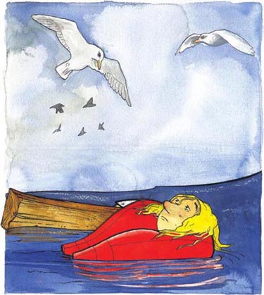
Tonya listens to the sea. She likes the noise. Then she hears something different.
'Is it a baby crying?' she thinks and looks up.
Ten metres in front of her is a big fin... a very big fin. Under the fin is a killer whale. The whale is making the noise. But it is not a baby – it is five metres long. Behind it is another whale. And another. And another.
'Killer whales eat people. I am going to die,' thinks Tonya.
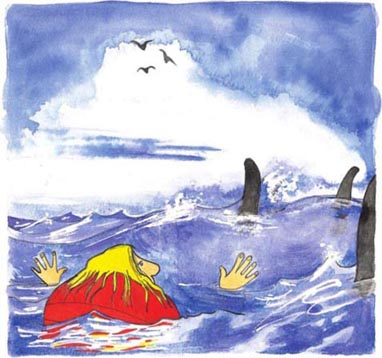
The killer whales come nearer and nearer. Tonya can't feel her legs. 'It's OK, they are cold. That's all,' she thinks. She starts to swim away from the big fins.
'Help me!' she shouts. 'Help, help, help!'
The killer whales are all around her. She closes her eyes and waits.
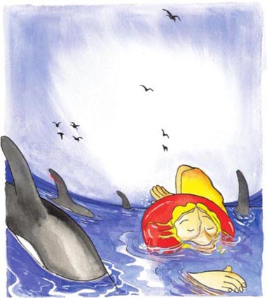
But she does not die.
The biggest killer whale is under her. Suddenly she is on his back.
'What is happening? Perhaps they are not hungry.'Tonya thinks.
The killer whale moves slowly to the shore. He is taking Tonya to the beach.
Tonya puts her hands on the fin in front of her.
'This is a very big fish – too big for my tea!' she thinks. She smiles and puts her head on his big back. Soon, she is sleeping again.
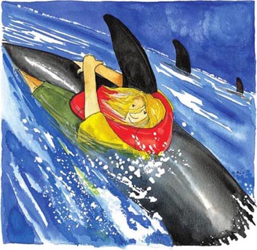
Jack sits on the beach. The sun is in the sky. Behind him, Max and Sasha sleep.
'I must do something,' he thinks. 'I can't take my boat but I must look for Tonya.'
He begins to walk along the beach. 'There is a town near here. I can get a new boat, then I can look for Tonya.'
Just then Jack sees something on the beach. He walks nearer. It is a woman.
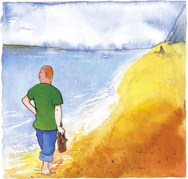
Jack runs to the woman on the beach. 'Tonya?' he shouts. 'Tonya! Is that you?'
Tonya moves her head slowly. 'Jack! Oh, Jack. You're OK!'
Jack puts his arms around Tonya. He kisses her face and cries. He can't speak – he is too happy.
Tonya says: 'What about Max and Sasha? Are they OK, too?'
'Everyone is OK,' answers Jack.
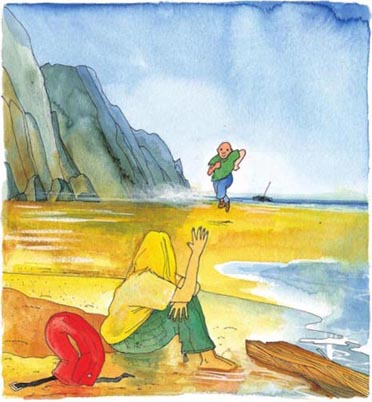
They sit on the beach and look at the sea.
Jack says: 'We are very, very lucky.'
Tonya sits up and sees a small fin in the water. It has a cut on it. The fin waves slowly and moves out to sea. It is waving goodbye, thinks Tonya.
'Lucky. Yes, Lucky,' she says quietly to Jack.
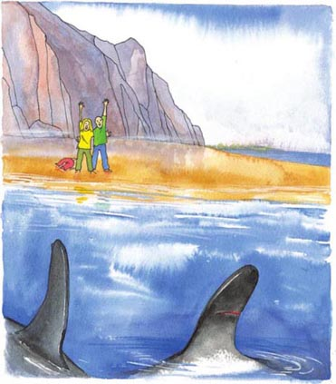
ACTIVITIES Before Reading
ACTIVITIES
Before Reading
1. Look at the front and back covers. Now answer these questions.
1) How do you think the story ends?
a The people on the boat kill the killer whale.
Yes/No
b The boat hits ice.
Yes/No
c A man shoots a bird.
Yes/No
d The killer whale helps a woman.
Yes/No
2) Where does the story happen?
a In a small town.
Yes/No
b In the mountains.
Yes/No
c On an African safari.
Yes/No
d At sea.
Yes/No
3) The boat sails south from England. Which of these does it sail past?
a Switzerland.
Yes/No
b France.
Yes/No
c Africa.
Yes/No
d Norway.
Yes/No
4) You are on a boat and you see a killer whale. Do you...
a move nearer for a better look?
Yes/No
b move away because you are afraid?
Yes/No
c try to catch it in a net?
Yes/No
ACTIVITIES While Reading
ACTIVITIES
While Reading
1. Read chapters 1 and 2 and then answer these questions.
1) Who is Jack's wife?
2) What does Sasha want to see?
3) Where do they want to sail to?
4) Where do they stop in Spain?
5) What do they eat for tea?
2. Read chapters 2 and 3 and then answer these questions.
Who…
1) looks at a boat through binoculars?
2) dives in the water?
3) shouts at Jack?
4) is bleeding?
Where…
5) is the baby killer whale hurt?
6) does Tonya buy a green hat?
7) do they try to sail to in the storm?
8) is the blood?
Why…
9) does the baby killer whale make a noise? 0
10) does Jack jump in the water?
11) does Tonya shout at Jack?
12) is the sky black?
3. Read chapters 3 and 4. Who says these words?
1) 'My arm hurts.'
2) 'Do you want us all to die?'
3) 'Help me! I'm over here!'
4) 'This can't happen. It can't!'
4. Read chapters 4 and 5 and then answer these questions.
1) Does Tonya hear a baby crying?
2) What does Jack see on the beach?
3) Why does Jack say, 'We are very, very lucky.'?
5. Look at the picture from Chapter 5 and answer these questions.
1) Where is the boat?
2) Why is Jack running?
3) Find three things in the picture that begin with the letter 'B'.
ACTIVITIES After Reading
ACTIVITIES
After Reading
1. Describe what is happening in these pictures.
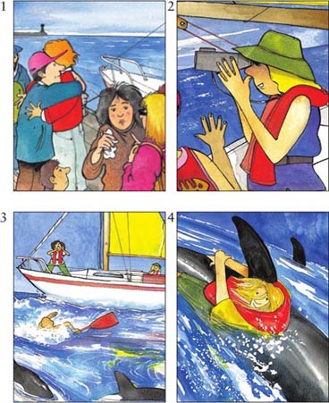
2. Put these sentences in the correct order. Number them 1-6.
a Jack helps the baby killer whale.
b The four friends decide to sail around the world.
c Tonya falls into the water.
d Jack gives the bird a fish.
e It begins to rain and there is a lot of wind.
f Jack sees Tonya on the beach.
3. Are these sentences true or false?
1) Jack is married to Sasha.
T/F
2) A whale pushes Tonya into the water.
T/F
3) The baby killer whale dies in the net.
T/F
4) Their boat has a yellow sail.
T/F
5) Max is hurt in the storm.
T/F
参考译文
参考译文
Orca
逆戟鲸
杰克·格里格斯站在他的小船上。风很大，船在海面快速行驶。一只白色大鸟飞过，“嘎”地叫了一声。
杰克笑着说：“嗨，大鸟。你今天好吗？”
杰克的朋友们大笑起来，扔了几条鱼给那只鸟。
“啊，”杰克说，“看来你饿了。”杰克的朋友们叫马克斯和萨莎，他的妻子叫托尼娅。
“我也饿了，”杰克说，“来点儿三明治和喝的吗，各位？托尼娅，你来开船好吗？”
半个小时后，他们正在吃东西。“现在我们打算干什么？”杰克问。
“哦，我要看书。然后睡觉。”托尼娅说。
“不是——明天呢？……下个月呢？……明年呢？”杰克看着大家，“我们以前的生意赚了很多钱，可是……”
“我们可以再做别的生意。”马克斯说。
“航海？”萨沙说。
“我不想再工作了，”托尼娅说，“我们不需要工作。”
“好吧，听着，”杰克说，“我在考虑环球航行。”
马克斯、托尼娅和萨莎看着杰克。“什么？从这儿到澳大利亚？”托尼娅问道。
“当然。”杰克说。现在他越来越兴奋。“马克斯，你觉得怎么样？”
“我觉得我们得讨论讨论。”马克斯说。
他们讨论了几个小时。到了晚上，马克斯、萨莎和托尼娅兴奋地说：“好。就这么办！”
他们出发前有很多事要做。杰克找一个了解环球航行的人谈了谈。他告诉杰克，那是一件艰苦的事。
“你怕大海吗？你的船很小。你了解你的朋友们吗？他们擅长航行吗？”他问道。
“我们非常了解彼此。他们是世界上最好的人。”杰克说。
四个朋友看了很多地图。萨莎想看鲸。马克斯想看看非洲。“我想坐在阳光下钓鱼来吃。”托尼娅笑着说。
这对他们几个来说是一件令人兴奋的事。而且开始的时候一切都很容易。
重大的日子到了——他们要出发了。他们的一些朋友和家人来送行。他们的朋友们站在水边道别。
“祝你们好运。”一个朋友说。
“别忘了我们！”萨莎的姐姐说。
“每天给我写信，”托尼娅的朋友说，“让鸟儿送信。”
萨莎哭了起来。“我们在做什么？我真的想去吗？”她心想。马克斯拉起她的手。大家都很安静，很兴奋，还有一点儿难过。
“再见。”杰克小声说。
风很大，船越走越快。杰克、马克斯、萨莎和托尼娅在海上很快乐。船上有很多事可做。风从他们身后刮来，不久他们就看不见英格兰了。他们现在不觉得难过了。
他们向南航行。在法国，他们停靠了洛里昂和比亚里茨；在西班牙，他们去了拉科鲁尼亚；在葡萄牙，他们停靠了里斯本。阳光越来越热，他们感觉很好。
萨莎钓到一条大鱼，他们把它当晚点吃了。
不久，他们航行到了非洲沿岸。在这里，一切都如此不同。他们停靠在冈比亚，人们都看他们。小孩子们拿来珠子、贝壳和布匹。托尼娅买了一顶绿色的帽子。这里趣味十足，喧闹异常，令人兴奋的事一桩接着一桩。
他们沿着非洲航行了很多星期，停靠了许多海边小城和村落。“非洲真有趣，真大，”萨莎说，“没有尽头。我看了地图，可是……”
“所以我们才来这儿，”杰克说，“和不同的人交谈，看不同的东西，船啦，大海啦，风啦。没什么比这更好的了，对吧？”
几天后，他们看到一条大渔船。船开得很快。
“嗨！”他们冲着渔船喊。渔船上的人生气地看着他们。马克斯用望远镜仔细看那条船。
“他们的渔网有问题。”他说。马克斯移动着望远镜，看到海里有东西。“我看到那边有渔网，”他指着左边说，“他们为什么不要网了？我们去看看。”
他们驶近渔网。托尼娅拿起望远镜。
“到底是……”托尼娅说，“那是什么？网里有东西。还活着，可那是什么东西？”
他们慢慢地靠近渔网。网里的东西很大，发出很大的响声。
“我现在能看到它了，”托尼娅说，“是一头逆戟鲸——杀人鲸——它受伤了。水里有血。我们怎么办？我们怎么才能帮帮它？”
“我也能看见。这是头幼鲸，但我们必须要小心。”马克斯说。
杰克下水了。他拿着一支长长的桨。“我来帮它。我能把网从它的鳍上弄掉。”他说。
“它妈妈在哪儿？”萨莎问。她看着海面。“我看不到有其他的鲸，可我觉得它们就在附近。小心点儿，杰克。”
杰克把渔网从小杀人鲸的鳍上弄掉。它的鳍上有一处很大的伤口，但它还是游走了。突然，小船周围出现了其他杀人鲸。
“杰克！”托尼娅喊道，“快上船。”杰克像鱼一样快速游回小船。“那只小杀人鲸……我要叫它‘幸运’。”他说。
他们甩开杀人鲸群时，天开始下雨。雨突然下得很大，风也很大。天空变成了黑色。
杰克说：“真糟糕。我们必须避开风。我看见那边有个城镇。我们过去。”
“我害怕。”托尼娅说。风太大，她的话听不太清楚。
“我们都害怕，”杰克说，“不过会没事的。”
离城镇越来越近了，但海浪也越来越大。突然，一个巨浪击中小船。到处都是水。
“大家都好吗？”杰克喊道，“马克斯？”
“还好。”马克斯说。
“萨莎？”
“我的胳膊受伤了，不过没关系。”萨莎说。
“托尼娅？……托尼娅？……托尼娅在哪儿？”杰克喊道。
“她不在船上，”萨莎说，“她掉水里了。可在哪儿啊？“
他们在冰冷漆黑的海里找了几个小时。“托尼娅！说话啊，托尼娅。你在哪儿？”马克斯喊。
风更大了，船里都是水。又一个大浪击中小船。现在萨莎的胳膊非常疼。
“杰克，我们得停下。你想让我们都死吗？”马克斯说。他揽住杰克。“我们不能再找了。托尼娅穿着救生衣，而且她游泳很好。我们到城镇靠岸吧。”
杰克双手抱住头。“不可能的，不可能的！”他说。
马克斯开始开船。但风太大了。过了一会儿，船撞上沙滩。三个朋友下了船。他们累坏了。
他们就停在那里。马克斯和萨莎在沙滩上睡着了，可杰克坐在海边。他看着大海，想着托尼娅。
托尼娅在离岸500米的海水中。她开始游，可海浪太大，水也太冷了。她找到一块木头，抱住了它。
托尼娅想：“我必须坚强。我不会死。我想再看到太阳。杰克会找到我。”
托尼娅看到远处有一条船。她对着船大喊：“救命！救救我！我在这儿！”她挥动手臂喊着，可是没人听见。风把她吹得离船更远了。
“哦，杰克。对不起。”她说。她的头歪倒在木头上。在大海的臂弯中，她睡着了。
突然，托尼娅醒了。风停了，她能看到太阳。她四处张望。她的前方有一片海岸——可她游不到那儿。
“我太冷太累了，”她想，“我必须尽快找到一条船。”
她看着大海。没有船，没有人，只有几只鸟。
“鸟能帮我吗？”她昏昏沉沉地想。
托尼娅听着大海的声音。她喜欢这声音。随后她听到了不一样的声音。
“是婴儿在哭吗？”她想着，抬起了头。
她前方10米处，有一个巨大的鳍……一个非常大的鳍。鳍的下面是一头杀人鲸。是这头鲸发出的声音。但这可不是头幼鲸——它有5米长。它后面还有一头鲸，再往后还有两头。
“杀人鲸会吃人。我要死了。”托尼娅想。
几只杀人鲸越来越近。托尼娅的腿失去了知觉。“没关系，腿很冷，就是这样。”她想。她开始从巨大的鳍旁游开。
“救命！”她喊道，“救命，救命，救命！”
杀人鲸包围了她。她闭上眼睛等待。
但她没有死。
最大的那头杀人鲸在她身下。她一下子到了它的背上。
“怎么回事？或许它们不饿。”托尼娅想。
这头杀人鲸慢慢地游向岸边。它要把托尼娅带到海岸边去。
托尼娅把手放在面前的鳍上。
“这真是条大鱼——太大了，不能当晚点！”她想。她笑着把头靠在它巨大的背上。不久，她又睡着了。
杰克坐在沙滩上。太阳挂在空中。他身后，马克斯和萨莎还在睡觉。
“我必须做点什么，”他想，“我不能开船，可我必须去找托尼娅。”
他开始沿着沙滩走。“这附近有个城镇。我能弄条新船，然后我就能去找托尼娅了。”
正在这时，杰克看到沙滩上有个东西。他走近了些。那是个女人。
杰克朝沙滩上的女人跑去。“托尼娅？”他喊道，“托尼娅！是你吗？”
托尼娅慢慢地转过头。“杰克！哦，杰克。你没事儿！”
杰克抱住托尼娅。他吻她的脸，哭了起来。他说不出话——他太高兴了。
托尼娅说：“马克斯和萨莎怎么样？他们也没事儿吗？”
“大家都好。”杰克回答。
他们坐在沙滩上，看着大海。
杰克说：“我们非常非常幸运。”
托尼娅坐起身，看到水里有个小小的鳍，上面有个伤口。鳍慢慢晃动，然后向大海中移去。它在挥手告别，托尼娅想。
“‘幸运’。是的，‘幸运’。”她低声对杰克说。
封底
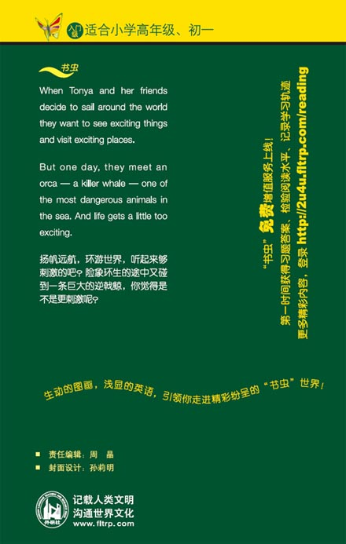